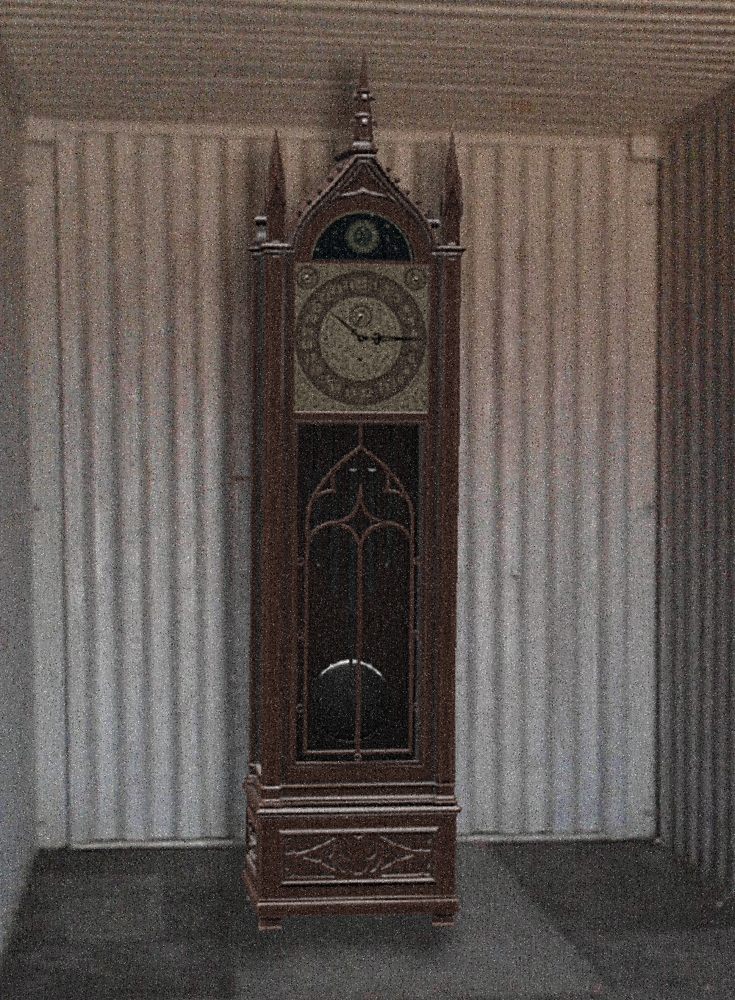
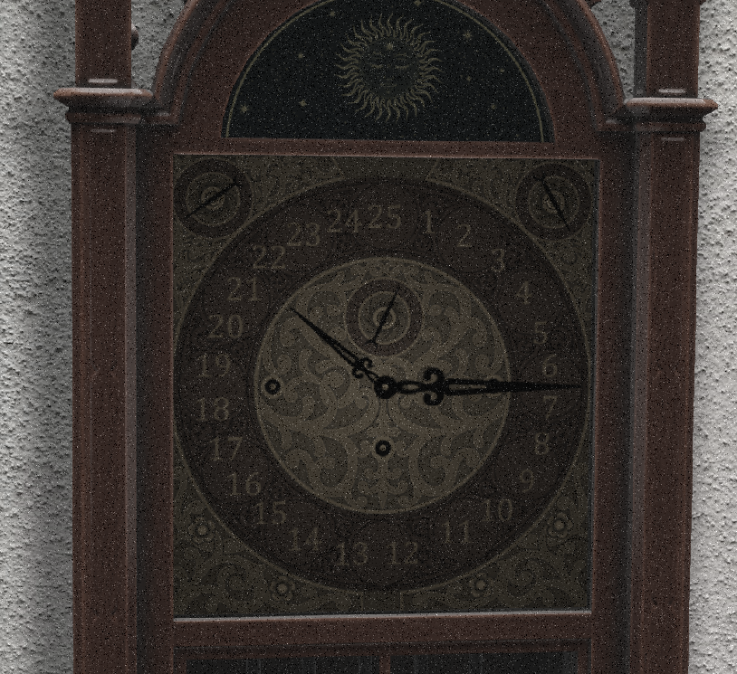

|  |
|---|
| RSE-051 during shipment |
RSE-051 is a grandfather clock speculated to be manufactured sometime in the 1950s. It measures about 6 feet, 6 inches tall. The trait that makes RSE-051 notable from every other grandfather clock is the face. RSE-051’s clock face is formatted differently from any other standard clock of the same style, resembling something similar to 24-hour time format instead of a typical 12-hour one with one difference. It resembles what is typical of a 24 hour clock face, however it also includes a ‘25’ in the space where the ‘12’ would be on a regular clock, pushing the ‘24’ down to around the 11:45 position.
Most of the time RSE-051 functions regularly and keeps in check with real-time, having the hour hand skip the 25th hour on its own. RSE-051 chimes as expected of a regular grandfather clock, on every hour corresponding to the number of hours that have passed since the previous midnight. However, at times, which are still being examined to attempt to find a correlation, RSE-051 will indeed strike the 25th hour. The specific dates this happens on seem to be mostly random but appear to happen within a week of a US-observed holiday, sometimes being on the holiday itself.
When RSE-051 strikes the 25th hour, it will chime the expected 25 times, and upon completing the last chime, the face will emit a strong red glow, illuminating the entirety of the room it is kept in. It emits this glow for 10 seconds, and during this time will exterminate any organisms within the room by means of immense radiation burning.
After this process is over, the glow fades, and RSE-051 re-syncs with real-time.
It is possible to predict whether or not the 25th chime will occur on any given day based on its’ chimes throughout the day. Normally, RSE-051 chimes every hour. However, on days where a 25th chime occurs, RSE-051 only chimes every 5th hour, beginning at hour 24 of the previous day. This pattern occurs until the chime. (12am, 5am, 10am, 3pm, 8pm, 1am [hour 25])
During the chime event, RSE-051 only exterminates what it can reach within an enclosure. If there are any gaps to the outside, an event will not occur even if it strikes the 25th hour. In relation to this, if a gap is opened in an enclosure containing RSE-051 while an event is occurring, the event will abruptly stop and it will immediately re-sync with real-time.
No one who has been subjected to an RSE-051 chime event has survived. Attempts to record the events up close result in immense damage to the internal components of the hardware involved. This problem is mitigated slightly with a live stream, although very few moments of the events actually manage to make it off the camera onto the host computer where the stream data is being sent.
|  |
|---|
| A closeup of RSE-051's face |
RSE-051 is kept in an airtight room in Location 03 with an interior and exterior door leading to the chamber. It is fitted with a large plexiglass window on one side for the purpose of researchers in the area being able to tell if an event is occurring.